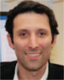

= APSA sponsored event
Friday, April 20th
| Time | Event |
|---|---|
| 8:30 am – 11:00 am |
APSA Business Meeting Location: Rouge |
| 11:00 am – 1:00 pm |
APSA Session I Location: International Ballroom |
| 11:00 am – 11:45 pm |
Selective Autophagy and Age-related Diseases: Making a Career out of Cellular Waste Managing APSA Keynote Speaker: Ana Maria Cuervo, MD, PhD, R.R. Belfer Chair for Neurodegenerative Diseases Location: International Ballroom |
| 12:00 pm – 12:45 pm |

APSA Keynote Speaker: Levi A. Garraway, MD, PhD, Eli Lilly and Company Sponsored by the Radiological Society of North America Location: International Ballroom |
| 1:00 pm – 3:00 pm |
Poster Setup Location: Imperial Ballroom |
| 1:00 pm – 3:30 pm |
AAP/ASCI/APSA Plenary Session I: TBA Session Moderators: TBA Location: International Ballroom |
| 1:00 pm – 1:30 pm |
Catalyzing Innovation and Charting a Path for the Future of Healthy Longevity: The Role of the National Academy of Medicine Invited Speaker: Victor J. Dzau, MD, National Academy of Medicine President Location: International Ballroom |
| 1:30 pm – 2:00 pm |
Searching for the Common Root of Multi Morbidity and Functional Decline in Aging: The Geroscience Initiative Invited Speaker: Luigi Ferrucci, MD, PhD, National Institutes of Health Location: International Ballroom |
| 2:00 pm – 3:00 pm |
ASCI and AAP New Member Presentations Location: International Ballroom |
| 3:00 pm – 3:30 pm |
-- Break -- Location: International Foyer |
| 3:30 pm – 6:00 pm |
AAP/ASCI/APSA Plenary Session I (Moderator Change): TBA Session Moderators: TBA Location: International Ballroom |
| 3:30 pm – 4:00 pm |
ASCI/Harrington Prize for Innovation in Medicine Lecture Location: International Ballroom |
| 4:00 pm – 4:30 pm |
APSA Lasker Award Winner Lecture Elucidation of Cellular Oxygen Sensing Pathways: Implications for Medicine APSA Keynote Speaker: Peter Ratcliffe, FRS, University of Oxford Location: International Ballroom |
| 4:30 pm – 5:00 pm |

ASCI Presidential Address Benjamin L. Ebert, MD, PhD, Brigham and Women’s Hospital Location: International Ballroom |
| 5:00 pm – 5:30 pm |
ASCI/Stanley J. Korsmeyer Award Lecture Recipient: TBA Location: International Ballroom |
| 5:45 pm – 7:00 pm |
APSA Diversity Working Group Location: State |
| 6:00 pm – 7:00 pm |
ASCI President’s Reception (invitation only) Location: Gold Room |
| 6:15 pm – 7:15 pm |
Poster Viewing Only Location: Imperial Ballroom |
| 7:00 pm – 9:00 pm |
AAP Offsite President’s Dinner (by invitation only) Location: Mid-America Club |
| 7:00 pm – 9:45 pm |
ASCI Annual Dinner/Introduction of New Members Speaker: George Daley, MD, PhD, Harvard Medical School (ticketed event) Location: Rouge |
| 9:00 pm – 12:00 am |
APSA Welcome Reception (ticketed event requiring ID) Location: Mid-America Club, Aon, 200 East Randolph Drive, 80th Floor, Chicago, IL 60601 |
Saturday, April 21st
| Time | Event |
|---|---|
| 7:00 am – 8:00 am |
AAP Council Meeting Location: State Room, 2nd Level |
| 7:00 am – 8:00 am |
Mentoring Breakfast (ticketed event) Location: Rouge |
| 8:00 am – 9:00 am |
APSA Board of Directors Meeting Location: Embassy Room |
| 8:00 am – 9:00 am |
Poster session (Odd-numbered) and continental breakfast Location: Imperial Ballroom |
| 9:00 am – 11:45 am |
AAP/ASCI/APSA Plenary Session II: TBA Session Moderators: TBA Location: International Ballroom |
| 9:00 pm – 9:30 pm |
Frailty and Resilience in Aging Invited Speaker: Linda Fried, MD, MPH Location: International Ballroom |
| 9:30 am – 9:45 am |
Oral Abstract Presentation: Location: International Ballroom |
| 11:00 am – 11:30 am |
Digitizing Healthspan Invited Speaker: Eric Topol, MD, The Scripps Research Institute Location: International Ballroom |
| 10:15 am – 10:30 am |
-- Break -- Location: International Foyer |
| 10:30 am – 11:00 am |
The Telomere Syndromes: A Paradigm for Molecular Medicine Invited Speaker: Mary Yousry Armanios, MD, Johns Hopkins Location: International Ballroom |
| 9:45 am – 10:15 am |
Revisiting a Classic: NAD+ Metabolism and Aging APSA Keynote Speaker: Eric Verdin, MD, Buck Institute for Research on Aging Location: International Ballroom |
| 11:30 am – 11:45 am | |
| 11:45 am – 1:30 pm |
Poster Session (Even-numbered) with Lunch Location: Imperial Ballroom |
| 12:45 pm – 1:30 pm |
Poster Review Meeting Location: Royal Room, Level B2 |
| 1:30 pm – 2:00 pm |
Poster Dismantle Location: Imperial Ballroom |
| 1:30 pm – 3:00 pm |
AAP/ASCI/APSA Plenary Session III: TBA Moderators: TBA Location: International Ballroom |
| 1:30 pm – 2:00 pm |
The Genome(s) and Epigenome(s) of Acute Myeloid Leukemia Invited Speaker: Timothy J. Ley, MD, Washington University School of Medicine in St. Louis Location: International Ballroom |
| 2:00 pm – 2:15 pm |
Oral Abstract Presentation: Location: International Ballroom |
| 2:15 pm – 2:45 pm |
Normal and Neoplastic Stem Cells Invited Speaker: Irving Weissman, MD, Stanford Medicine Location: International Ballroom |
| 2:45 pm – 3:00 pm |
Best Poster Awards Location: International Ballroom |
| 2:45 pm – 3:15 pm |
-- Break -- Location: International Foyer |
| 3:15 am – 3:45 am |
Genes, Genomes and Future of Medicine Invited Speaker: Rick Lifton, MD, PhD, Yale School of Medicine Location: International Ballroom |
| 3:30 pm – 5:45 pm |
AAP/ASCI/APSA Plenary Session III (Moderator Change): TBA Moderators: TBA Location: International Ballroom |
| 3:45 pm – 4:15 pm |
Kober Lecturer: Helen H. Hobbs, MD, University of Texas Southwestern Medical Center Location: International Ballroom |
| 4:15 pm – 4:45 pm |
AAP Presidential Address Serpil Erzurum, MD, Cleveland Clinic Location: International Ballroom |
| 4:45 pm – 5:15 pm |
Kober Medal Presentation
Recipient: Stuart H. Orkin, MD; Dana Farber Cancer Institute
Presenter: Leonard I. Zon, MD; Howard Hughes Medical Institute, Harvard Medical School, Boston Children’s HospitalInternational Location: International Ballroom |
| 5:15 pm – 5:30 pm |
AAP Business Meeting Location: TBA |
| 5:45 pm – 7:00 pm |
APSA Panel: Social Sciences and Humanities Panel Location: Crystal Room |
| 5:45 pm – 7:00 pm |
APSA Panel: Policy and Advocacy Workshop Location: TBA |
| 6:00 pm – 8:00 pm |
ASCI Food and Science: Featuring Poster Presentations by the ASCI’s 2017 YoungPhysician-Scientist Award Recipients and Howard Hughes Medical Institute Medical Research Fellows (invitation only) Location: Gold Room |
| 7:00 pm – 9:30 pm |
AAP Banquet and Speaker: Jeffrey M. Drazen, MD: Editor-in-Chief, New England Journal of Medicine Location: Imperial Ballroom |
| 7:30 pm – 9:00 pm |
APSA Dinner and Founder's Award Presentation (ticketed event) Founder's Award Recipient: TBA Location: Rouge |
| 9:45 pm – 11:30 am |
Dessert Reception (open to all attendees) An opportunity for APSA members to converse with and learn from senior physician-scientist members of the AAP. Location: Imperial Lobby |


Sunday, April 22nd
| Time | Event |
|---|---|
| 8:00 am – 12:00 pm |
APSA Session II Location: International Ballroom |
| 8:00 am – 9:30 am |
Mentoring Breakfast - Medical Specialties (ticketed event) Location: International Ballroom |
8:30 am – 9:30 am |
Society Leadership Wrap Up Meeting Location: State Room |
| 9:30 am – 10:00 am |
APSA Keynote Speaker: Sharon K. Inouye, MD, MPH, Aging Brain Center Location: Gold Room |
| 10:00 am – 11:00 am |
APSA Panel: Alternative Careers Panel Location: Gold Room |
| 11:00 am – 12:00 pm |
APSA Panel: The Do's and Don'ts of MSTP Admissions Location: Embassy Room |
| 11:00 am – 12:30 pm |
APSA Panel: Resilience Workshop Location: Gold Room |
| 12:30 pm – 2:30 pm |
Location: TBA Come get your questions answered by the experts about specific programs and the nature of physician-scientist training after medical and graduate school. If you are applying to residency soon, this is an unrivaled opportunity to directly connect with program directors. Find a list of all the programs here |
| 2:30 pm – 4:30 pm |
APSA Research Pathway Director’s Meeting Location: State Room |